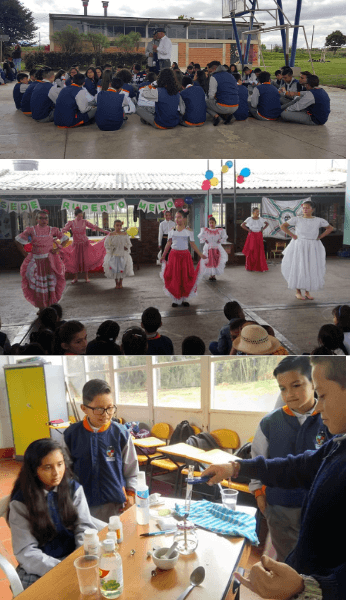
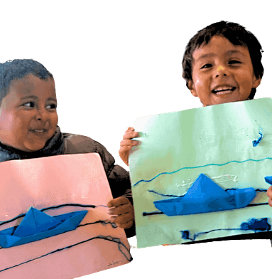

INSTITUTO PARCELAS
Conoce nuestros...
Eventos!!
Queremos que conozcas nuestros eventos realizados o programados para realizar próximamente, y que esperamos nos puedas acompañar, junto con tu grupo familiar.

Mi voz cuenta desde casa
Septiembre 7, 2020
El grupo de maestras de ciclo 1 realizaron el concurso “Mi voz cuenta desde casa” cuyo objetivo fue visibilizar la voz y la experiencia de los niños de preescolar y primero durante la cuarentena, a través del texto informativo y los medios
de comunicación.
Se inició todo el proceso con la elaboración de una guía pedagógica donde los niños aprendieron qué es una noticia, a investigar y por supuesto a jugar como reporteros y presentadores de sus propias noticias.

...El resultado de este concurso fue la participación de todas las familias con 53 videos, filmados y editados por los niños y las familias. En la selección de los mejores reportajes participaron jurados de la institución, que dieron a conocer los 5 ganadores en una ceremonia virtual con la presencia de toda la comunidad educativa.
Enlaces o Link de Interés